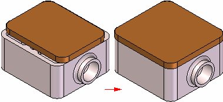
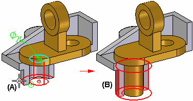

Inter-Part associativity
When constructing the parts and assemblies for a design project, you can use the geometry on other parts in the assembly to help you construct a new part or subassembly. For example, you can use the Project to Sketch command to create 2D geometry for the base feature of a new part by copying edges on an existing part.

Depending on the approach you use, the included geometry can be associative or nonassociative to the original edges.
When you create new geometry associatively, then modify the original, or parent geometry; the child geometry also updates. If you change the size of the parent part, the included child geometry for the base feature also updates.

-
When designing in the context of an assembly, only ordered features can be linked using Inter-Part relationships. In the synchronous environment faces can be copied, but they are not linked to geometry contained in the part that the face was copied from.
-
An Inter-Part Associativity tutorial is available that demonstrates how to create associative Inter-Part features.
The following commands and functions in Solid Edge allow you to use existing geometry associatively:
-
Project to Sketch command
-
Inter-Part Copy command
-
Assembly-Driven Part Features
-
Reference Plane Definition
-
Feature Extent Definition
-
Variable Table
Many of these options are available only when you set the proper Inter-Part associativity option on the Inter-Part tab on the Options dialog box.
When one part is associatively linked to another part in Solid Edge, special symbols
are used to indicate the associative link. For example, when you Project to Sketch an edge from another part in the assembly to define the profile for cutout feature
in the active part, a link symbol  is displayed adjacent to the part feature in PathFinder and adjacent to the part entry in PathFinder.
is displayed adjacent to the part feature in PathFinder and adjacent to the part entry in PathFinder.
These associative links between parts are called Inter-Part links to indicate that one part is dependent on another part for the definition of some of its geometry. The link information is common to both parts, using the higher-level assembly to interpret the relative orientation of the geometry.
For more information about managing Inter-Part links, see the Managing Inter-Parts Links section of this Help topic.
Including elements
You can use the Project to Sketch command to include edges from the active part, an assembly sketch, or the other parts in the assembly. When including edges from an assembly sketch or another part in the assembly, you can control whether the included edges are associative to the parent element using the Inter-Part Locate options on the Project to Sketch dialog box.
You can only Project to Sketch elements from an assembly sketch or the other parts in an assembly when you are editing a part in the context of an assembly (you have in-place activated a part or you are creating a part in place).
When the Allow Locate of Peer Assembly Parts and Assembly Sketches option is set, you can locate and select elements in other parts and assembly sketches. To copy the elements associatively, you must also set the Maintain Associativity When Including Geometry From Other Parts in the Assembly option. When this option is cleared you can copy elements from other parts and assembly sketches nonassociatively.
To include elements associatively between documents, set the Allow Inter-Part Links Using: Project to Sketch Command in Part and Assembly Sketches option on the Inter-Part on the Options dialog box.
Inter-Part copies
You can use the Inter-Part Copy command in the Part and Sheet Metal environments to associatively copy faces, features, and entire parts into another part document as construction geometry. You can then use the Project to Sketch command to associatively copy edges from the construction geometry into a profile for a feature. To ensure that the Project to Sketch command only copies edges from the associative construction geometry, turn off the assembly display using the Hide Previous Level command on the View tab.
The Inter-Part Copy command is only available when you are editing a part in the context of an assembly (you have in-place activated a part or you are creating a part in place).
To copy elements associatively between documents, set the Allow Inter-Part Links Using: Inter-Part Copy Command option on the Inter-Part tab on the Options dialog box.
Earlier versions of Solid Edge created a new link each time a piece of inter-part geometry was referenced. If the same Inter-Part geometry is referenced more than once in the local document, a single link is used. If that link is broken, all the children that use that link are affected. Freezing a link with multiple features referenced freezes all the children of the parent feature.
Assembly-Driven part features
You can use the assembly feature commands such as Cutout, Hole, and Revolved Cutout in the Assembly environment to construct assembly-driven part features in an assembly. You can specify which parts in the assembly you want to cut. Assembly-Driven part features are added as a linked feature to each part document.
For more information on Assembly-Driven Part Features, see the Assembly-based Features Help topic.
To construct Assembly-Driven Part Features in an assembly, set the Allow Inter-Part Links Using: Assembly-Driven Part Features option on the Inter-Part tab on the Options dialog box.
Reference planes
When constructing a feature for a part, you can use an assembly reference plane to define the new feature. If the assembly reference plane is modified, the feature associatively updates. To select an assembly reference plane, press the Shift key, then select the assembly reference plane.
You can only use an assembly reference plane when you are editing a part in the context of an assembly (you have in-place activated a part or you are creating a part in place).
To use an assembly reference plane while constructing a part feature, set the Allow Inter-Part Links Using: Assembly Reference Planes In Feature option on the Inter-Part tab on the Options dialog box.
Feature extents
When working within the context of an assembly, many feature commands allow you to select a keypoint on another part in the assembly to define the extent for a feature. For example, when constructing a protrusion in the Part environment, you can select a keypoint (A) on another part in the assembly during the Extent Step.
The extent for the feature is associative to the keypoint on the part you select. If the other part is modified (B) such that the keypoint location changes, the extent for the linked feature also updates.

You can also use an assembly sketch to define the extent for a feature.
Variables
You can use the Variable Table in Solid Edge to associatively paste an assembly variable into a part or subassembly. This allows you to control several parts at once with one variable. For example, you can create an assembly variable to control the size of a hole in several parts in the assembly.
For more information on pasting variables between documents, see the Linking Variables Between Parts in an Assembly section of the Variables Help topic.
To associatively paste variables between documents, set the Allow Inter-Part Links Using: Paste Link To Variable Table option on the Inter-Part tab on the Options dialog box.